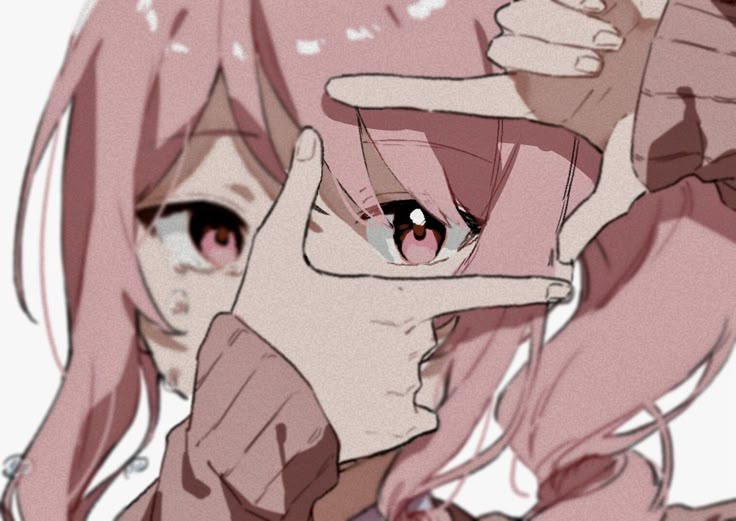

Their Story
Mizuki and Ena aren't people I met once and forgot. They're the kind of presence that quietly shaped how I see kindness, patience, and quiet company. This room is where I keep that.
Mizuki Akiyama & Ena Shinonome
Mizuki and Ena aren't people I met once and forgot. They're the kind of presence that quietly shaped how I see kindness, patience, and quiet company. This room is where I keep that.
Small, ordinary afternoons that turned out to matter more than the big occasions ever did.

They remind me that showing up quietly, again and again, is its own kind of devotion.
Memories may fade from photographs, but never from the heart.
Every picture here tells a story I'll always be grateful for.